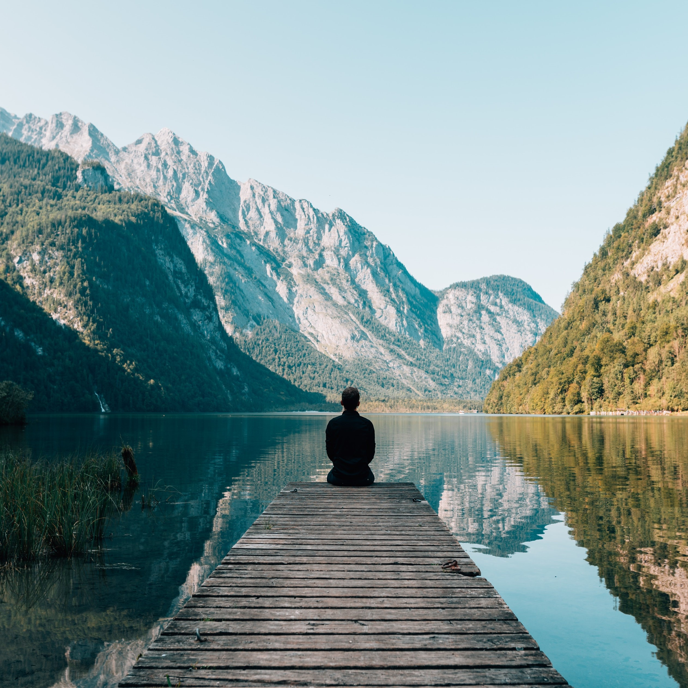

Welcome to my Tour Blog !
So, this is my travel blog page. I will keep uploading the blogs of the new tours. So, GO ON !

Welcome to my Tour Blog !
So, this is my travel blog page. I will keep uploading the blogs of the new tours. So, GO ON !
NorthBengal #1: Lamahatta-Tinchuley
On, 17th march we parted for the northermost part of West bengal, to fulfill our dream of seeing the Kanchenjungha clearly. (We were quite unlucky, though) So,come click here and read my experience in Lamahatta and Tinchuley.

Jharkhand #1: Betla National Park
On, 19th May we parted for the western most part of Jharkhand, Betla National Park, near Palamau, Daltonganj. So,come click here and read my experience in Jharkhand.